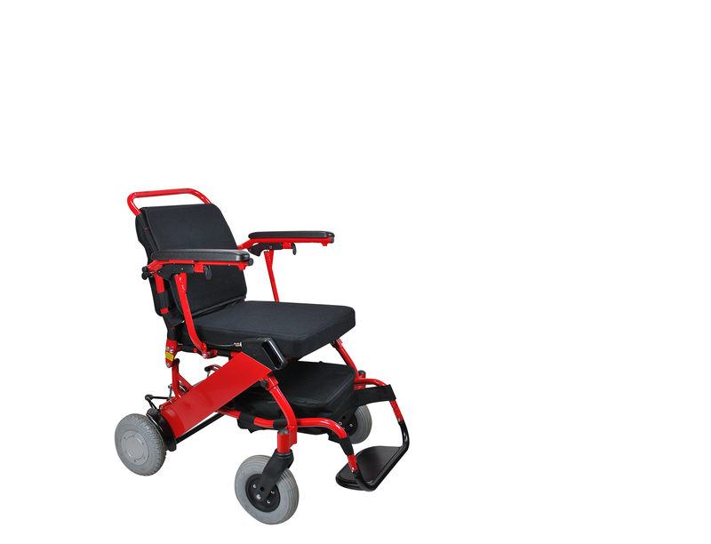

* Ces produits disposent d’une prise en charge par la Sécurité Sociale

Configurateur ErgoConcept
Fauteuil :
Accessoires :
Total (sans prise en charge)
€ TTC
Total si prise en charge par la sécurité sociale
€ TTC